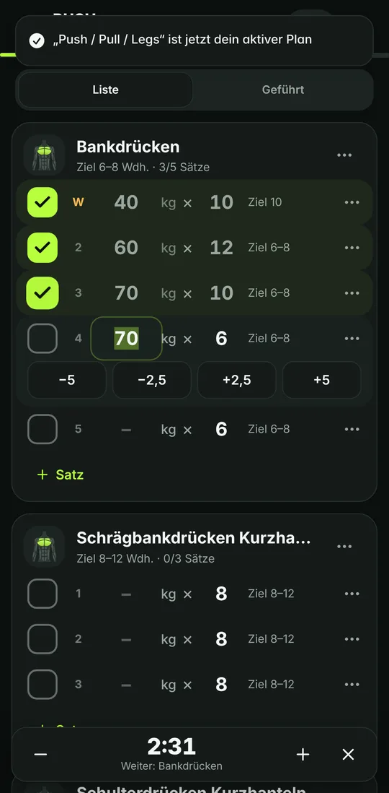
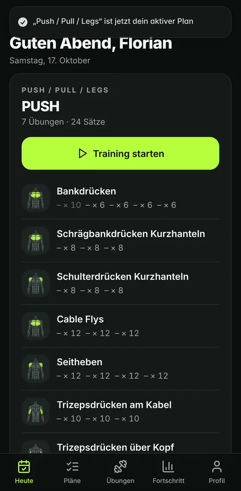
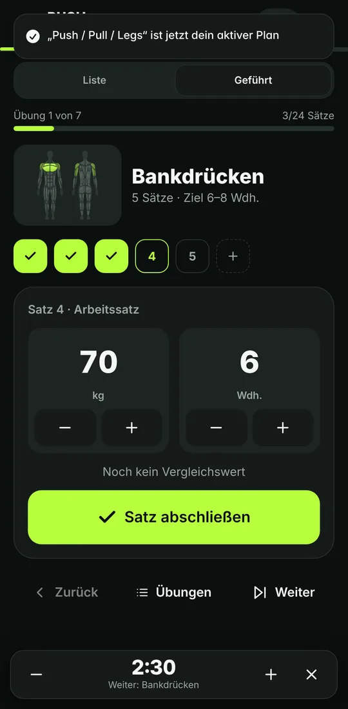
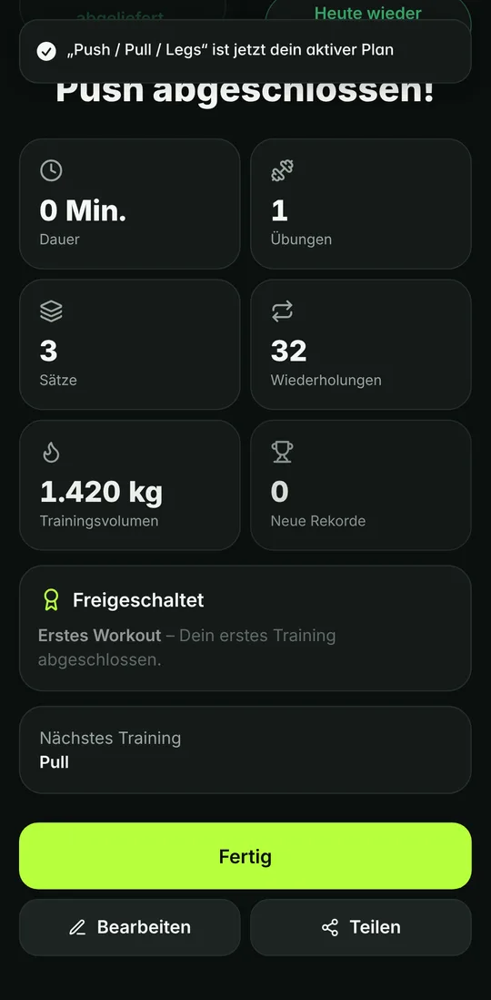
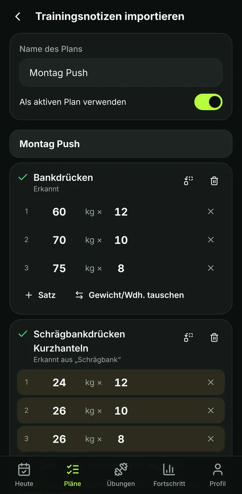
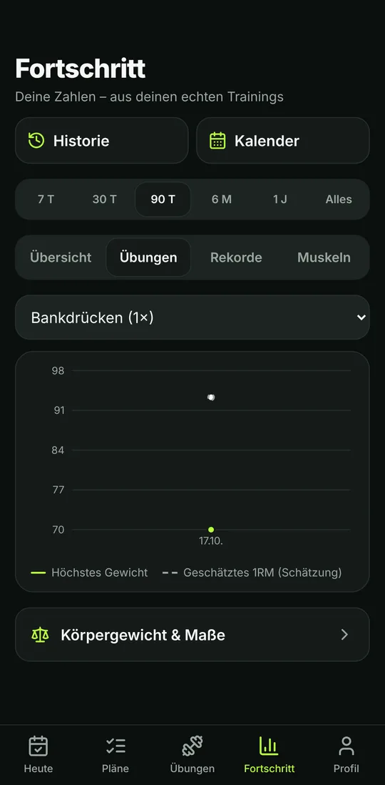
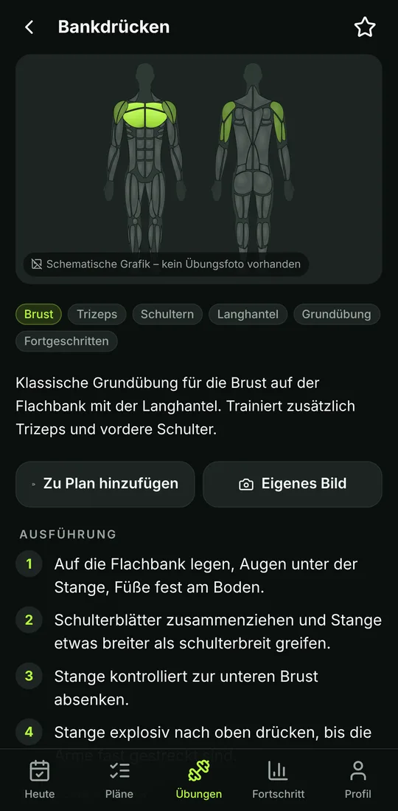
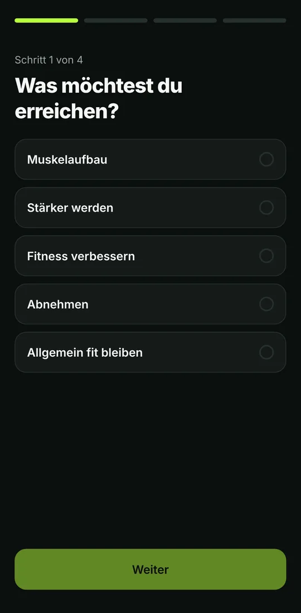

Trainingstagebuch · selbst gehostet · offline-fähig
Trainieren statt Tippen.
SATZIO protokolliert Krafttraining so knapp wie eine Notiz: 60 kg × 12, abhaken, weiter. Werte vom letzten Mal sind vorausgefüllt, das Training läuft auch ohne Netz, und alle Daten liegen auf deinem eigenen Server.
- Lizenzkosten
- keine Cloud-Abos, keine bezahlten APIs
- Deployment
- docker compose up -d --build
- Plattformen
- Web (PWA), Android, iOS via Capacitor
Bankdrücken
- 40 kg×10W
- 60 kg×12
- 70 kg×10
- 72,5 kg×8zuletzt
Schrägbankdrücken KH
- 26 kg×10zuletzt
- — kg×8Plan

01 Notizen-Import
Alte Trainingsnotizen übernehmen, ohne KI-Cloud.
Text aus Apple Notizen, Google Keep oder einer beliebigen Textdatei einfügen. Ein lokaler, regelbasierter Parser erkennt Übungen, Sätze, Wiederholungen und Gewichte. Der Text verlässt dafür nicht das Gerät. Gewichte werden nie erfunden, und Mehrdeutiges wird markiert statt geraten.
1Montag Push
2Bankdrücken 3x10 80kg
3Latziehen 12x55, 10x60, 8x65
4Bizeps 3 Sätze je 12 mit 14kg
5Dips +10kg 3x8
6Schrägbank 24x12, 26x10, 26x8| Zeile | Übung (Bibliothek) | Sätze | Status |
|---|---|---|---|
| 2 | Bankdrücken | 3 × 10 @ 80 kg | erkannt |
| 3 | Latziehen | 55×12 · 60×10 · 65×8 | erkannt |
| 4 | Bizepscurls Kurzhantel aus „Bizeps“ | 3 × 12 @ 14 kg | erkannt |
| 5 | Dips | 3 × 8 @ +10 kg | erkannt |
| 6 | Schrägbankdrücken Kurzhanteln aus „Schrägbank“ | 12×24 · 10×26 · 8×26 | prüfen |
Zeile 6: „Gewicht und Wiederholungen sind nicht eindeutig – bitte die Reihenfolge prüfen.“ In der Vorschau tauscht ein Tipp auf Gewicht/Wdh. tauschen die Werte, bevor etwas gespeichert wird.
Ausgabe des tatsächlichen Parsers aus packages/shared für die gezeigte Eingabe. Ebenfalls unterstützt: Blockformat mit einer Übung pro Zeile und Sätzen darunter, Häkchen ✓/☐, Wiederholungsbereiche wie 4x8-10.
02 Funktionen
Was die App konkret macht.
- Notiz-Editor fürs Workout
- Jeder Satz ist eine Zeile 60 kg × 12 ✓. Gewicht und Wiederholungen sind direkt in der Zeile editierbar, abgehakt wird mit einem Tipp. Sätze hinzufügen oder duplizieren, Aufwärmsätze markieren. Gespeichert wird automatisch, einen Speichern-Knopf gibt es nicht.
- Smart Defaults
- Vorausgefüllt werden die echten Werte vom letzten Training, je Satzposition und Satztyp, sonst Planvorgabe oder dein Standardwert. Für jeden Wert wird die Quelle gespeichert (history, plan, user_default, none). Fehlt eine Quelle, bleibt das Feld leer.
- Geführter Modus & Pausentimer
- Ein Satz pro Bildschirm mit großen Bedienelementen. Der Pausentimer rechnet mit einer absoluten Endzeit und läuft deshalb nach Reload oder App-Wechsel korrekt weiter. Einschränkung: Hintergrund-Timer und Benachrichtigungen sind auf iOS nur begrenzt verfügbar.
- Trainingspläne
- Plan-Editor mit Autosave und Versionsverlauf. 11 Vorlagen (u. a. Ganzkörper, Push/Pull/Legs, Oberkörper/Unterkörper, Kurzhanteltraining) mit Satz- und Wiederholungszielen, ohne erfundene Gewichte. Flexible Rotation oder feste Wochentage; verpasste Einheiten lassen sich verschieben.
- Übungsbibliothek
- 184 Übungen mit deutschen Ausführungshinweisen, Muskelgruppen und Equipment. Eigene Übungen lassen sich ergänzen und werden beim Import mit berücksichtigt.
- Rekorde & Progression
- Persönliche Bestwerte pro Übung. Das 1RM wird nach Epley geschätzt und als Schätzung gekennzeichnet. Progressionsvorschläge erscheinen als Vorschlag. Übernommen wird erst, wenn du bestätigst.
- Auswertung
- Verlauf, Kalender, Volumen und Rekorde je Übung und Muskelgruppe, ausschließlich aus deinen erfassten Trainings. Körpergewicht und Maße separat. Ohne Daten bleibt ein Diagramm leer, statt Beispielwerte zu zeigen.
- Erfolge & Serien
- Trainingsserien und Erfolge als leise Rückmeldung. Wer das nicht möchte, schaltet Erfolge im Profil komplett ab.
03 Offline & Sync
Funkloch im Keller? Das Training läuft weiter.
Jede Änderung wird zuerst lokal geschrieben und als Operation in eine Outbox gelegt. Sobald eine Verbindung besteht, werden die Operationen in Reihenfolge an den Server gesendet.
- Client App React, Service Worker cacht die App-Shell
- IndexedDB Outbox (Dexie) Operation mit eindeutiger opId und baseVersion
- HTTP POST /api/v1/sync idempotent, bis zu 100 Operationen je Request
- Server PostgreSQL 16 Versionsnummer je Entität (Workout, Übung, Satz)
- applied
- übernommen, neue Version zurück
- duplicate
- opId schon verarbeitet, kein Doppeleintrag
- conflict
- anderes Gerät war schneller, Serverstand wird mitgeliefert
- not_found
- Entität existiert nicht (mehr)
- rejected
- Validierung fehlgeschlagen, mit Fehlertext
- Keine stillen Überschreibungen. Hat ein anderes Gerät dieselbe Entität seit deiner Basisversion geändert, zeigt die App beide Stände, und du entscheidest.
- Wiederholbar. Bricht die Verbindung mitten im Request ab, wird einfach erneut gesendet. Doppelte opIds werden serverseitig erkannt.
- Reload-fest. Ein offline begonnenes Workout übersteht das Neuladen der Seite. Das ist durch einen End-to-End-Test abgedeckt.
04 Self-Hosting
Drei Container, ein Server, deine Daten.
Docker Compose startet PostgreSQL, die API und den Web-Client hinter nginx. Kein Firebase, kein Supabase, keine kostenpflichtigen Drittanbieter-APIs.
-
1 Repository holen
git clone <repo-url> satzio && cd satzio -
2 Secrets erzeugen
./scripts/setup.shSchreibt eine .env mit zufälligen Datenbank- und Token-Secrets.
-
3 Starten
docker compose up -d --buildFür den Betrieb im Internet einen Reverse Proxy mit TLS davorschalten.
Sicherheit & Datenschutz
- Passwörter
- Argon2id
- Sitzungen
- Rotierende Refresh-Tokens im HttpOnly-Cookie
- CSRF
- Double-Submit-Token
- Missbrauch
- Rate Limiting auf Auth-Endpunkten
- Isolation
- Konten-Trennung durch API-Tests geprüft
- Datenexport
- Export und Import als JSON und CSV
- Löschen
- Konto inklusive aller Daten in der App löschbar
05 Screens
So sieht es aus.
Unbearbeitete Screenshots der Web-App, 390 px Viewport.







06 Technik
Stack und Qualitätssicherung.
| Web-Client | React 19, Vite, Tailwind CSS, TanStack Query, Zustand |
|---|---|
| Offline-Speicher | IndexedDB über Dexie, Outbox-Muster, Service Worker für die App-Shell |
| Mobile | Capacitor für Android und iOS (gleiche Codebasis wie Web) |
| API | NestJS 11, Validierung mit Zod, OpenAPI-Dokumentation |
| Datenbank | PostgreSQL 16, Prisma 6 |
| Geteilte Logik | Parser, Smart Defaults, Progression, Serien und Rekorde als eigenes Paket, von Client und Server genutzt |
| Betrieb | Docker Compose: postgres, api, web (nginx) |
| Tests | Automatisierte Tests decken ab: die geteilte Logik (Unit-Tests), die API mit 36 Integrationstests inklusive Konten-Isolation sowie den kompletten Trainingsablauf und den Offline-Betrieb per Playwright-E2E. |